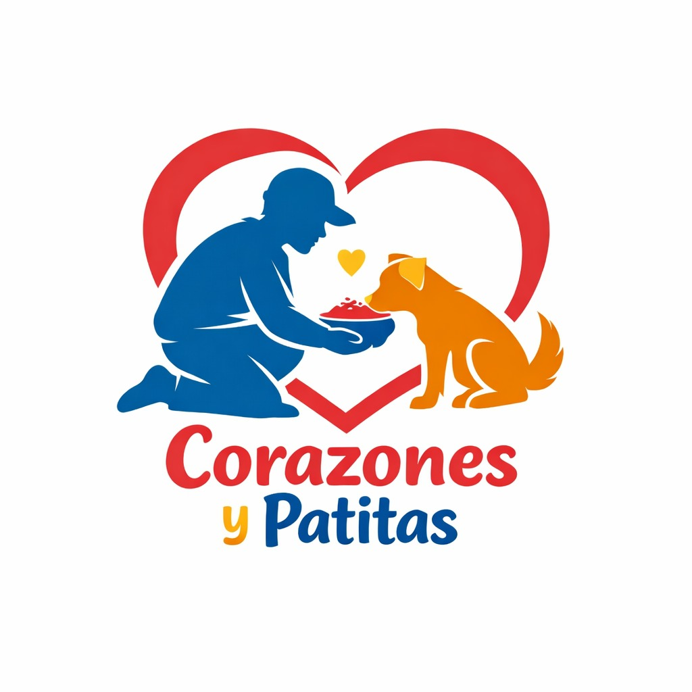

Voluntariado estudiantil · Santa Ana, El Salvador
"Nuestro deseo es hacer un cambio en la sociedad por medio de un proyecto." — Josué Solís, 2026
Corazones y Patitas es un proyecto de voluntariado estudiantil con una misión clara: apoyar a los animales en situación de abandono y mejorar los espacios de nuestra comunidad.
El propósito es ofrecer apoyo solidario a animales y personas en condición de calle, ayudando a cubrir una necesidad básica como la alimentación, y al mismo tiempo fomentar en los estudiantes valores de empatía, sensibilidad social y compromiso con su entorno mediante acciones concretas.
Trabajamos junto a la ONG Huellitas y Bigotes (fundada por la Lic. Corina Arcia), organización con un refugio activo en Santa Ana que avalará oficialmente las horas de cada voluntario.
Acumula horas de servicio certificadas, desarrolla empatía y liderazgo, haz amigos con el mismo propósito y genera un impacto real en tu comunidad.
Brindamos alimento a cachorros en situación de abandono en diferentes zonas de la comunidad durante los fines de semana.
Recolección de basura en zonas públicas con materiales como bolsas y guantes, llevando los residuos a los lugares pertinentes.
Limpieza de instalaciones, baño a perritos y actividades de decoración o mejora en el albergue de Huellitas y Bigotes.
Cada salida transforma una vida animal y fortalece tu comunidad. Obtienes horas de servicio certificadas y avaladas oficialmente.
Todos los lugares son zonas seguras con presencia de residentes cercanos.
Col. Méndez, carretera a Candelaria de la Frontera, final 3ª calle oriente, Santa Ana.
Zonas aledañas al río, realizando alimentación y limpieza de espacios públicos.
Zonas aledañas, apoyando a los animales en situación de calle del sector.
Parques, alrededores de zonas residenciales y espacios comunitarios cercanos.
Ser voluntario no requiere experiencia previa — solo ganas de ayudar y hacer la diferencia. Completa el formulario de inscripción o descarga el documento informativo para conocer todos los detalles del proyecto.
Fundada por la Lic. Corina Arcia
Esta ONG avala y firma las horas de voluntariado del proyecto Corazones y Patitas. Cuentan con un refugio activo en Santa Ana donde podrás ir a apoyar directamente en limpieza de instalaciones, baño a perritos y actividades de mejora del espacio.
También puedes comunicarte con cualquier miembro del equipo Corazones y Patitas.